← Back to Knowledge Bank

📜 Custom Recipes
Outcast SMP features custom recipes that add unique crafting options to enhance gameplay. Below are all the custom recipes available on the server.
Website by ar1stika
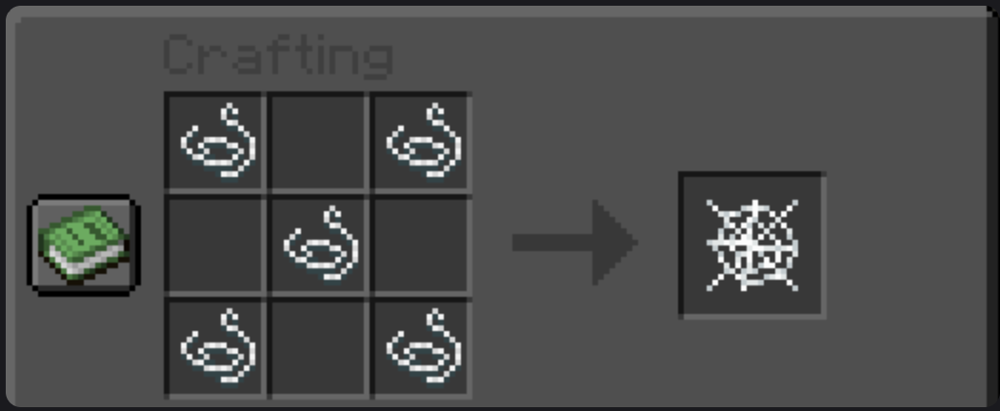
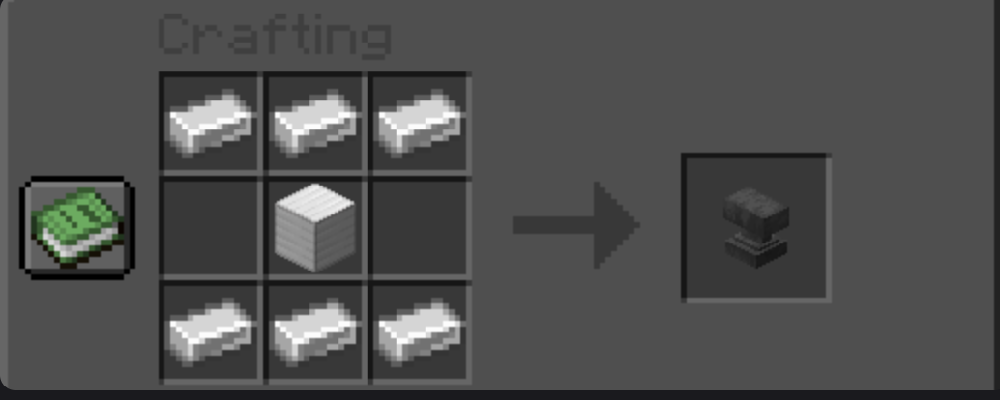
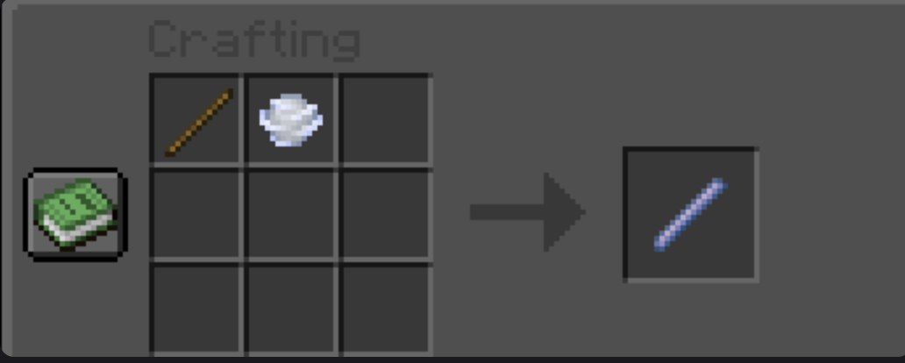
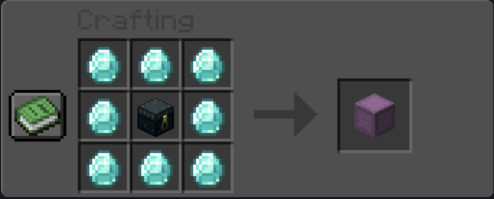
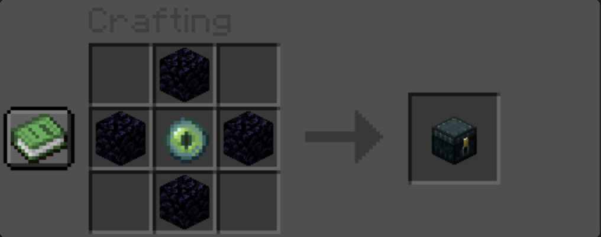
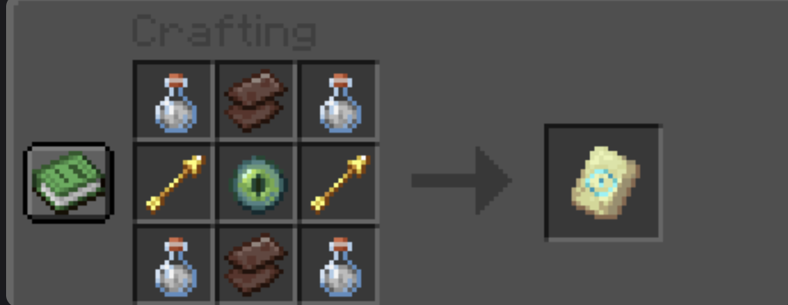
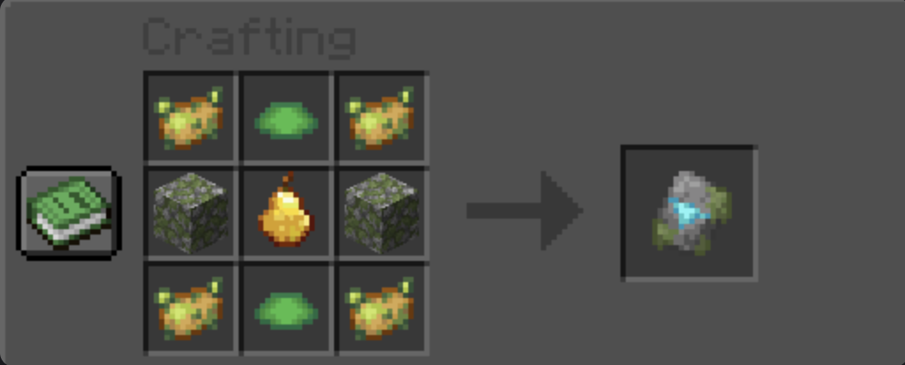
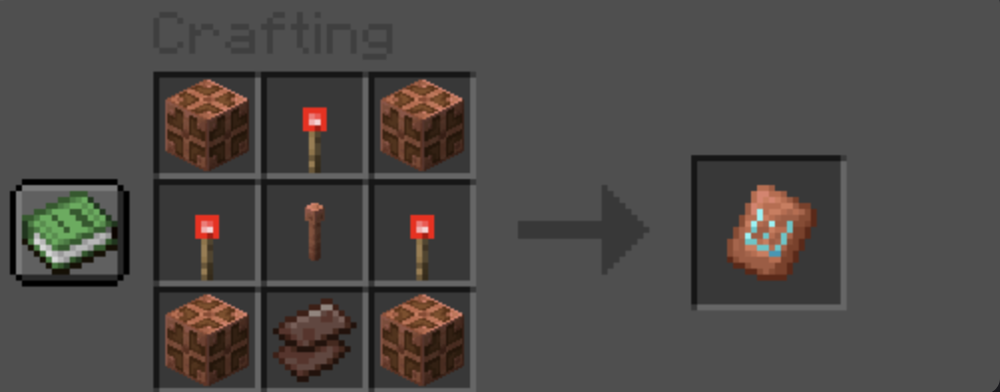
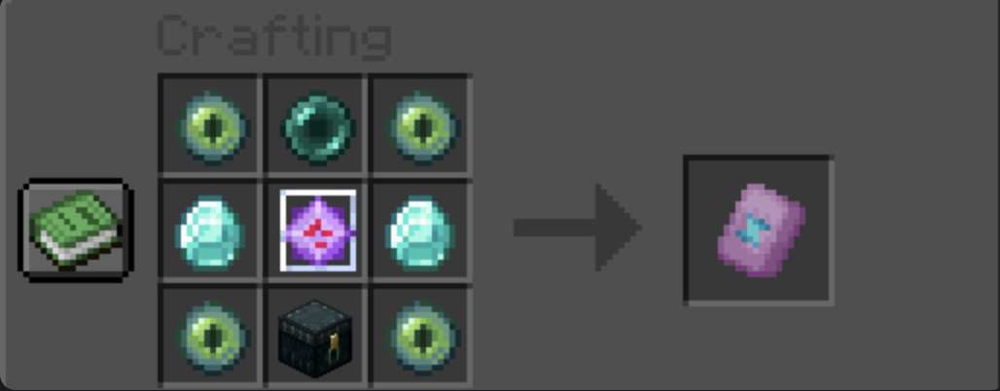
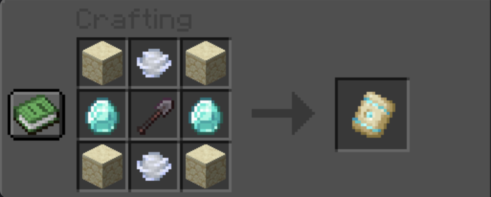
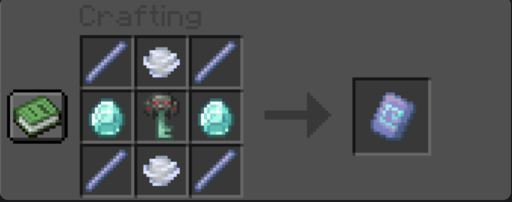
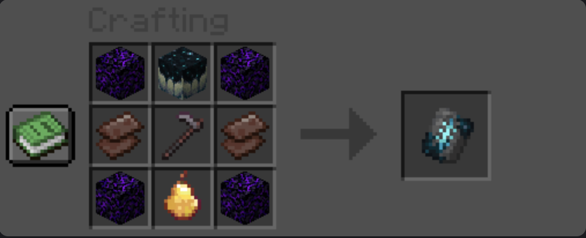
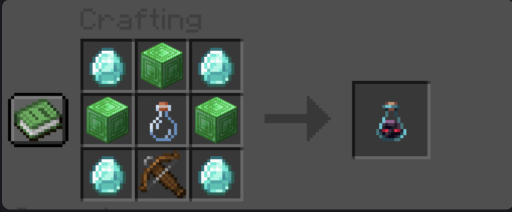
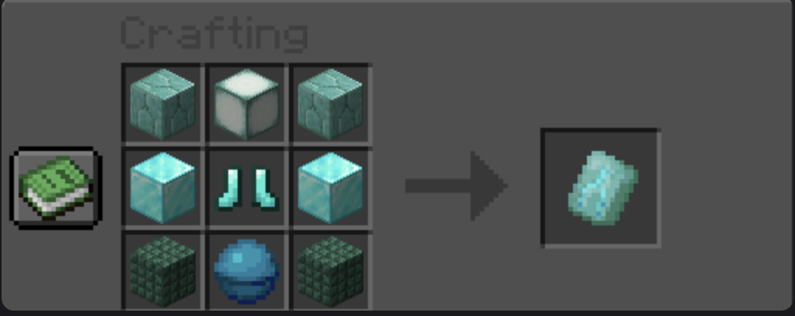
Note: These custom recipes are server-side only and require no client modifications. Simply use a crafting table or other crafting interface as shown in the images above.
Website by ar1stika